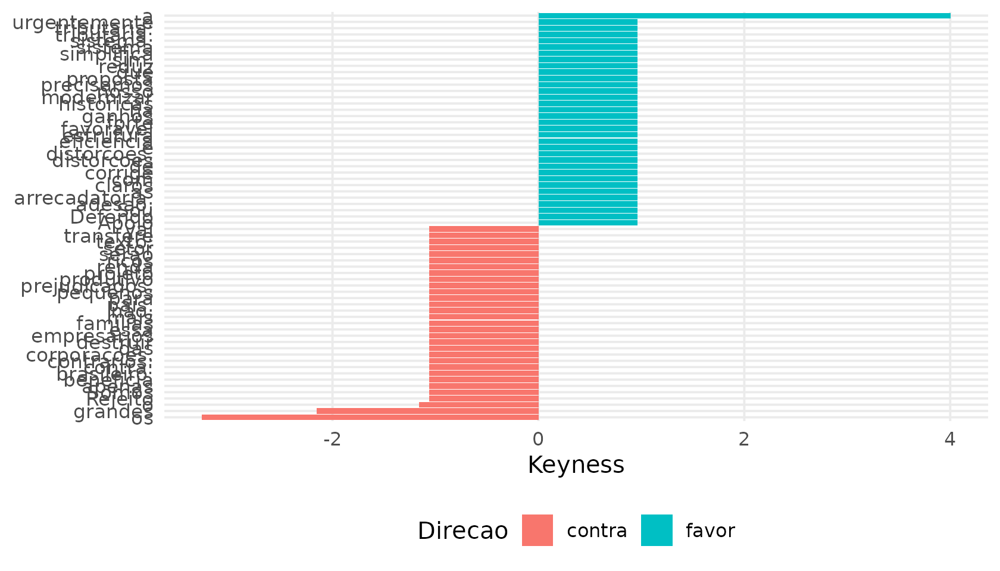
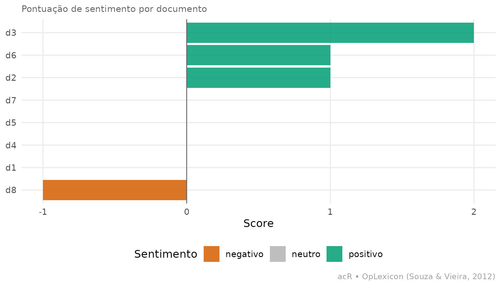

Introdução ao acR: pipeline integrado de análise de conteúdo
Source:vignettes/introducao-acR.Rmd
introducao-acR.RmdEsta vignette percorre o pipeline completo do acR em um
exemplo pequeno mas realista — discursos parlamentares favoráveis e
contrários a uma reforma — mostrando o output efetivo de cada
etapa. Se você prefere um tour de 5 minutos com só o essencial, veja o
Quickstart.
O objeto central: ac_corpus
Tudo no acR gira em torno do ac_corpus, um
tibble com colunas padronizadas doc_id e
text que carrega quaisquer metadados adicionais. As demais
funções aceitam esse objeto diretamente.
df <- data.frame(
id = paste0("d", 1:8),
texto = c(
"Sou favoravel a reforma tributaria: simplifica o sistema e reduz distorcoes.",
"Voto contra: essa reforma vai destruir o setor produtivo brasileiro.",
"Apoio a proposta com forte adesao, ha ganhos claros de eficiencia arrecadatoria.",
"Rejeito o texto: transfere renda das familias para grandes corporacoes.",
"Defendo a reforma que corrige as distorcoes historicas do nosso sistema.",
"Somos contrarios: o projeto beneficia apenas os mais ricos do pais.",
"Voto sim, precisamos modernizar urgentemente a estrutura tributaria.",
"Voto nao, os pequenos empresarios serao os grandes prejudicados."
),
partido = c("PT","PL","PT","PL","PT","PL","PT","PL"),
posicao = c("favor","contra","favor","contra","favor","contra","favor","contra"),
stringsAsFactors = FALSE
)
corpus <- ac_corpus(df, text = texto, docid = id, meta = c(partido, posicao))
corpus
#>
#> ── Corpus acR ──────────────────────────────────────────────────────────────────
#> • Documentos: 8
#> • Metadados: 2 colunas
#> • Idioma: "pt"
#>
#> # A tibble: 8 × 4
#> doc_id text partido posicao
#> <chr> <chr> <chr> <chr>
#> 1 d1 Sou favoravel a reforma tributaria: simplifica o siste… PT favor
#> 2 d2 Voto contra: essa reforma vai destruir o setor produti… PL contra
#> 3 d3 Apoio a proposta com forte adesao, ha ganhos claros de… PT favor
#> 4 d4 Rejeito o texto: transfere renda das familias para gra… PL contra
#> 5 d5 Defendo a reforma que corrige as distorcoes historicas… PT favor
#> 6 d6 Somos contrarios: o projeto beneficia apenas os mais r… PL contra
#> # ℹ 2 more rows1. Frequências e termos salientes
# Frequência global
freq <- ac_count(corpus)
ac_top_terms(freq, n = 8)
#> # A tibble: 81 × 3
#> doc_id token n
#> <chr> <chr> <int>
#> 1 d8 os 2
#> 2 d3 Apoio 1
#> 3 d5 Defendo 1
#> 4 d4 Rejeito 1
#> 5 d6 Somos 1
#> 6 d1 Sou 1
#> 7 d2 Voto 1
#> 8 d7 Voto 1
#> 9 d8 Voto 1
#> 10 d1 a 1
#> # ℹ 71 more rowsAgora quebrando por lado (favor vs
contra):
freq_lado <- ac_count(corpus, by = "posicao")
ac_top_terms(freq_lado, n = 5, by = "posicao")
#> # A tibble: 72 × 3
#> posicao token n
#> <chr> <chr> <int>
#> 1 contra o 3
#> 2 contra os 3
#> 3 contra Voto 2
#> 4 contra grandes 2
#> 5 contra Rejeito 1
#> 6 contra Somos 1
#> 7 contra apenas 1
#> 8 contra beneficia 1
#> 9 contra brasileiro. 1
#> 10 contra contra: 1
#> # ℹ 62 more rows2. Termos distintivos com keyness
Quais palavras aparecem muito mais em um grupo do
que no outro? A métrica chi2 (χ²) mede essa
distintividade.
key <- ac_keyness(freq_lado, group = "posicao", target = "favor")
head(key, 6)
#> # A tibble: 6 × 10
#> token group target reference n_target n_reference total_target total_reference
#> <chr> <chr> <chr> <chr> <dbl> <dbl> <dbl> <dbl>
#> 1 a posi… favor contra 4 0 42 40
#> 2 Apoio posi… favor contra 1 0 42 40
#> 3 Defe… posi… favor contra 1 0 42 40
#> 4 Sou posi… favor contra 1 0 42 40
#> 5 ades… posi… favor contra 1 0 42 40
#> 6 arre… posi… favor contra 1 0 42 40
#> # ℹ 2 more variables: keyness <dbl>, direction <chr>Visualização compacta dos termos mais distintivos:
if (requireNamespace("ggplot2", quietly = TRUE)) {
ac_plot_keyness(key, n = 6)
}
3. Sentimento por documento (OpLexicon)
Escore agregado de polaridade de cada documento, usando o léxico OpLexicon (Souza e Vieira, 2012):
sent <- ac_sentiment(corpus)
sent
#> # A tibble: 8 × 6
#> doc_id n_pos n_neg n_neu score sentiment
#> <chr> <int> <int> <int> <int> <chr>
#> 1 d1 0 0 11 0 neutro
#> 2 d2 1 0 9 1 positivo
#> 3 d3 2 0 10 2 positivo
#> 4 d4 0 0 10 0 neutro
#> 5 d5 0 0 11 0 neutro
#> 6 d6 1 0 10 1 positivo
#> 7 d7 0 0 8 0 neutro
#> 8 d8 0 1 8 -1 negativoVisualizando por documento:
if (requireNamespace("ggplot2", quietly = TRUE)) {
ac_plot_sentiment(sent)
}
4. Escolher um modelo LLM
Antes de codificar qualitativamente, o acR recomenda
modelos com base em custo, idioma e tipo de tarefa. Consulta 100 %
offline:
ac_qual_recommend_model(task = "coding", budget = "medium", lang = "pt", n = 3)
#>
#> ── Recomendacoes de modelo acR ─────────────────────────────────────────────────
#> ℹ Tarefa: "coding" | Budget: "medium" | Idioma: "pt"
#> ℹ Baseado em Gilardi et al. (2023, PNAS) e Tornberg (2023, PLOS ONE).
#> # A tibble: 3 × 12
#> rank provider model_id name tier context_k cost_input cost_output
#> <int> <chr> <chr> <chr> <chr> <dbl> <dbl> <dbl>
#> 1 1 google google/gemini-2.0… Gemi… fast 1000 0.1 0.4
#> 2 2 google google/gemini-2.5… Gemi… fron… 1000 1.25 10
#> 3 3 openai openai/o4-mini o4-m… bala… 200 1.1 4.4
#> # ℹ 4 more variables: pt_support <chr>, score <dbl>, justificativa <chr>,
#> # acr_string <chr>Base: Gilardi, Alizadeh e Kubli (2023) e Törnberg (2023).
5. Codificação qualitativa com LLM
Esta etapa exige chave de API (ANTHROPIC_API_KEY,
GROQ_API_KEY, etc.) e por isso não roda na construção da
vignette. Estrutura mínima:
codebook <- ac_qual_codebook(
name = "posicionamento",
instructions = "Classifique o posicionamento sobre a reforma tributaria.",
categories = list(
favor = list(
definition = "Manifestação favorável à reforma.",
examples_pos = "Sou favoravel a reforma, simplifica o sistema."
),
contra = list(
definition = "Manifestação contrária à reforma.",
examples_pos = "Voto contra, vai destruir o setor produtivo."
)
)
)
codificado <- ac_qual_code(
corpus = corpus,
codebook = codebook,
model = "anthropic/claude-sonnet-4-5"
)codificado é um tibble com doc_id,
categoria, confidence_score (via
self-consistency) e reasoning.
6. Validação humana e confiabilidade
# Amostra estratificada priorizando casos incertos
amostra <- ac_qual_sample(codificado, n = 50, strategy = "uncertainty")
# Exporta planilha para revisão humana
ac_qual_export_for_review(amostra, path = "revisao.xlsx", corpus = corpus)
# Após preencher, reimporta e calcula IRR
humano <- ac_qual_import_human("revisao.xlsx")
ac_qual_reliability(llm = codificado, human = humano)Um exemplo do formato do output com dados sintéticos (equivalente ao que sai com codificação real):
llm_sim <- tibble::tibble(
doc_id = paste0("d", 1:8),
categoria = c("favor","contra","favor","contra","favor","contra","favor","contra")
)
humano_sim <- tibble::tibble(
doc_id = paste0("d", 1:8),
categoria = c("favor","contra","favor","contra","favor","favor","favor","contra")
# 1 discordância em 8 casos -> ~87.5% de concordância
)
ac_qual_reliability(llm = llm_sim, human = humano_sim, bootstrap = 50)
#> Calculando confiabilidade em 8 documentos comuns...
#> Warning in irr::kripp.alpha(mat, method = "nominal"): NAs introduced by
#> coercion
#> Warning in irr::kripp.alpha(rbind(l, h), method = "nominal"): NAs introduced by
#> coercion
#> Warning in irr::kripp.alpha(rbind(l, h), method = "nominal"): NAs introduced by
#> coercion
#> Warning in irr::kripp.alpha(rbind(l, h), method = "nominal"): NAs introduced by
#> coercion
#> Warning in irr::kripp.alpha(rbind(l, h), method = "nominal"): NAs introduced by
#> coercion
#> Warning in irr::kripp.alpha(rbind(l, h), method = "nominal"): NAs introduced by
#> coercion
#> Warning in irr::kripp.alpha(rbind(l, h), method = "nominal"): NAs introduced by
#> coercion
#> Warning in irr::kripp.alpha(rbind(l, h), method = "nominal"): NAs introduced by
#> coercion
#> Warning in irr::kripp.alpha(rbind(l, h), method = "nominal"): NAs introduced by
#> coercion
#> Warning in irr::kripp.alpha(rbind(l, h), method = "nominal"): NAs introduced by
#> coercion
#> Warning in irr::kripp.alpha(rbind(l, h), method = "nominal"): NAs introduced by
#> coercion
#> Warning in irr::kripp.alpha(rbind(l, h), method = "nominal"): NAs introduced by
#> coercion
#> Warning in irr::kripp.alpha(rbind(l, h), method = "nominal"): NAs introduced by
#> coercion
#> Warning in irr::kripp.alpha(rbind(l, h), method = "nominal"): NAs introduced by
#> coercion
#> Warning in irr::kripp.alpha(rbind(l, h), method = "nominal"): NAs introduced by
#> coercion
#> Warning in irr::kripp.alpha(rbind(l, h), method = "nominal"): NAs introduced by
#> coercion
#> Warning in irr::kripp.alpha(rbind(l, h), method = "nominal"): NAs introduced by
#> coercion
#> Warning in irr::kripp.alpha(rbind(l, h), method = "nominal"): NAs introduced by
#> coercion
#> Warning in irr::kripp.alpha(rbind(l, h), method = "nominal"): NAs introduced by
#> coercion
#> Warning in irr::kripp.alpha(rbind(l, h), method = "nominal"): NAs introduced by
#> coercion
#> Warning in irr::kripp.alpha(rbind(l, h), method = "nominal"): NAs introduced by
#> coercion
#> Warning in irr::kripp.alpha(rbind(l, h), method = "nominal"): NAs introduced by
#> coercion
#> Warning in irr::kripp.alpha(rbind(l, h), method = "nominal"): NAs introduced by
#> coercion
#> Warning in irr::kripp.alpha(rbind(l, h), method = "nominal"): NAs introduced by
#> coercion
#> Warning in irr::kripp.alpha(rbind(l, h), method = "nominal"): NAs introduced by
#> coercion
#> Warning in irr::kripp.alpha(rbind(l, h), method = "nominal"): NAs introduced by
#> coercion
#> Warning in irr::kripp.alpha(rbind(l, h), method = "nominal"): NAs introduced by
#> coercion
#> Warning in irr::kripp.alpha(rbind(l, h), method = "nominal"): NAs introduced by
#> coercion
#> Warning in irr::kripp.alpha(rbind(l, h), method = "nominal"): NAs introduced by
#> coercion
#> Warning in irr::kripp.alpha(rbind(l, h), method = "nominal"): NAs introduced by
#> coercion
#> Warning in irr::kripp.alpha(rbind(l, h), method = "nominal"): NAs introduced by
#> coercion
#> Warning in irr::kripp.alpha(rbind(l, h), method = "nominal"): NAs introduced by
#> coercion
#> Warning in irr::kripp.alpha(rbind(l, h), method = "nominal"): NAs introduced by
#> coercion
#> Warning in irr::kripp.alpha(rbind(l, h), method = "nominal"): NAs introduced by
#> coercion
#> Warning in irr::kripp.alpha(rbind(l, h), method = "nominal"): NAs introduced by
#> coercion
#> Warning in irr::kripp.alpha(rbind(l, h), method = "nominal"): NAs introduced by
#> coercion
#> Warning in irr::kripp.alpha(rbind(l, h), method = "nominal"): NAs introduced by
#> coercion
#> Warning in irr::kripp.alpha(rbind(l, h), method = "nominal"): NAs introduced by
#> coercion
#> Warning in irr::kripp.alpha(rbind(l, h), method = "nominal"): NAs introduced by
#> coercion
#> Warning in irr::kripp.alpha(rbind(l, h), method = "nominal"): NAs introduced by
#> coercion
#> Warning in irr::kripp.alpha(rbind(l, h), method = "nominal"): NAs introduced by
#> coercion
#> Warning in irr::kripp.alpha(rbind(l, h), method = "nominal"): NAs introduced by
#> coercion
#> Warning in irr::kripp.alpha(rbind(l, h), method = "nominal"): NAs introduced by
#> coercion
#> Warning in irr::kripp.alpha(rbind(l, h), method = "nominal"): NAs introduced by
#> coercion
#> Warning in irr::kripp.alpha(rbind(l, h), method = "nominal"): NAs introduced by
#> coercion
#> Warning in irr::kripp.alpha(rbind(l, h), method = "nominal"): NAs introduced by
#> coercion
#> Warning in irr::kripp.alpha(rbind(l, h), method = "nominal"): NAs introduced by
#> coercion
#> Warning in irr::kripp.alpha(rbind(l, h), method = "nominal"): NAs introduced by
#> coercion
#> Warning in irr::kripp.alpha(rbind(l, h), method = "nominal"): NAs introduced by
#> coercion
#> Warning in irr::kripp.alpha(rbind(l, h), method = "nominal"): NAs introduced by
#> coercion
#> Warning in irr::kripp.alpha(rbind(l, h), method = "nominal"): NAs introduced by
#> coercion
#> ℹ Interpretação baseada em Landis & Koch (1977) e Gwet (2014).
#> ℹ IC 95% via bootstrap (n = 50).
#> # A tibble: 4 × 5
#> metric estimate ci_lower ci_upper interpretation
#> <chr> <dbl> <dbl> <dbl> <chr>
#> 1 percent_agreement 0.875 0.625 1 boa (>= 80%)
#> 2 krippendorff_alpha 0.762 0.306 1 substancial (Landis & Koch, 197…
#> 3 gwet_ac1 0.754 0.342 1 substancial (Landis & Koch, 197…
#> 4 f1_macro 0.873 0.667 1 quase perfeita (Landis & Koch, …As métricas incluem percent agreement, alpha de Krippendorff, AC1 de Gwet e F1 macro, com IC via bootstrap e interpretação segundo Landis e Koch (1977) e Gwet (2014).
Próximos passos
-
Codificação com
LLMs — codebook completo,
ellmer, self-consistency, tradução, fusão. - Análise de proposições — pipeline real de ponta-a-ponta em texto legislativo brasileiro.
- LDA — modelagem de tópicos.
- Sentimento — pipeline detalhado com OpLexicon.
Referências
GILARDI, F.; ALIZADEH, M.; KUBLI, M. ChatGPT outperforms crowd workers for text-annotation tasks. PNAS, v. 120, n. 30, 2023.
GWET, K. L. Handbook of inter-rater reliability. 4. ed. Gaithersburg: Advanced Analytics, 2014.
KRIPPENDORFF, K. Content analysis: an introduction to its methodology. 4. ed. Thousand Oaks: SAGE, 2018.
LANDIS, J. R.; KOCH, G. G. The measurement of observer agreement for categorical data. Biometrics, v. 33, n. 1, p. 159-174, 1977.
SOUZA, M.; VIEIRA, R. Sentiment analysis on Twitter with Portuguese language. STIL/SBC, 2012.
TÖRNBERG, P. ChatGPT-4 outperforms experts and crowd workers in annotating political Twitter messages with zero-shot learning. PLOS ONE, v. 18, n. 4, 2023.